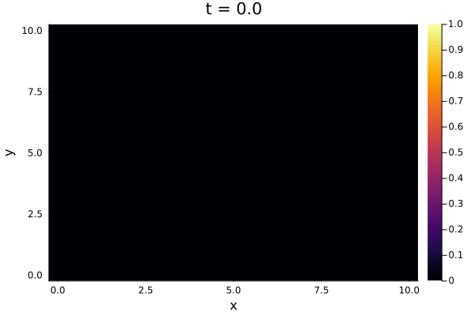

💨 Difusión térmica en 2D
Esta animación muestra la evolución de la temperatura en una placa metálica usando el modelo de difusión térmica en 2D. Se resolvió numéricamente la ecuación del calor mediante el método de diferencias finitas.

Esta animación muestra la evolución de la temperatura en una placa metálica usando el modelo de difusión térmica en 2D. Se resolvió numéricamente la ecuación del calor mediante el método de diferencias finitas.
